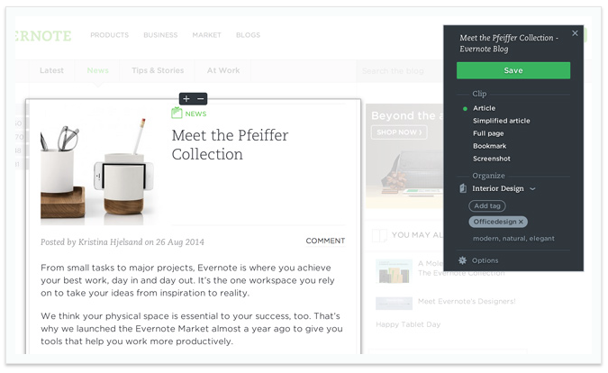

Two of my favorites are:
I recently started using Adobe Brackets code editor and I love the Extract feature that is built in the app. It enables me to get CSS code hints from a PSD design that would be time consuming otherwise if needed to code manually by hand.
The interface is very simple and the speed with which it enables me to get a simple prototype up and running is a great advantage. The feature also lets me save images that are in the PSD to a folder. (Figure below from the help page of Extract documentation)
One disadvantage is that the code hints do not work as expected some times. The online documentation lacks some details at times which makes it harder to understand certain steps. By providing more detailed user documentation would certainly enable it to have a broader exposure to the feature set.
Evernote has been one of the best organizers I have used. The simplicity of the user experience and the speed of doing things makes it really useful. I heavily use both the iOS app and the web interface to store and sort notes. The ability to create lot of notebooks and notes, makes it easy to gather ideas, snippets from the web or something simple as a grocery list.
What makes this note taking feature unique is that it is able to connect seamlessly to a vast array of plugins and third party tools. I use Web clipper a lot, which is a browser plugin that lets you clip web pages into your notebooks.
One thing that I do not like at times is that you are not able to store larger notes. It is great for small bits of information, anything larger and it can get messy. I would certainly enable some of the features like 'Search in PDFs' open to their basic account (right now it is only premium and business subscribers). As PDFs are so common in day to day activities, enabling even non-paying user base would enable it for a higher reach and enable more prospects to start using the service.